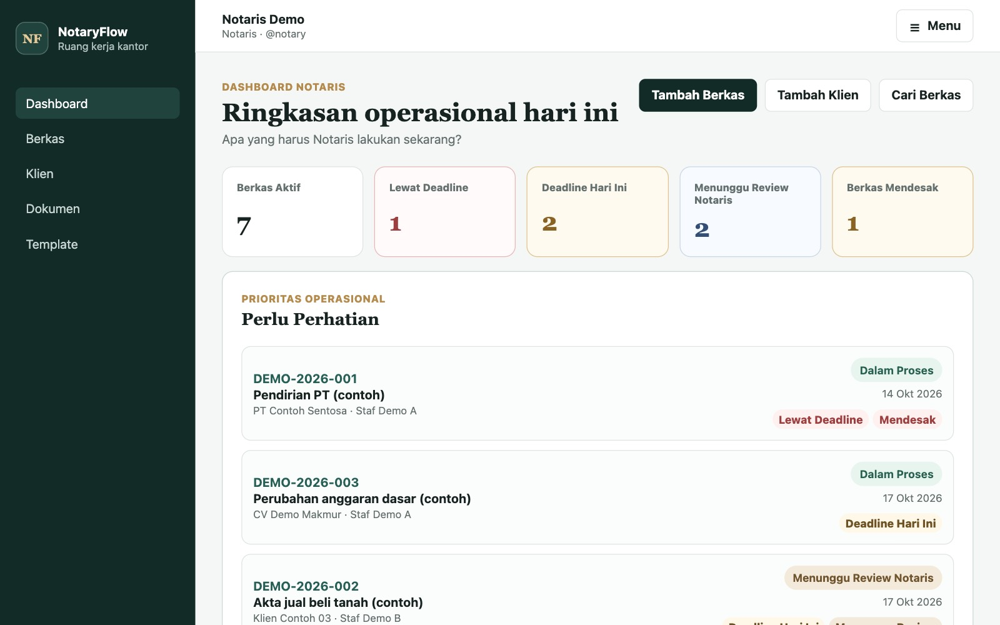

Violinist, trainer, section leader, and music director
UKM Bersama Dalam Musik · modern orchestra
Member since the start of university and still active. Teaches peers as a trainer and serves as an official officer: section leader and music director.
Computer Science · BINUS University
Target roles Data Analyst · Business Intelligence · Data Engineer
Database Technology student building analyses, dashboards, and data pipelines.
Computer Science student at BINUS University, concentrating in Database Technology, expected to graduate in 2028. Works mainly in Power BI, including DAX, and Tableau, with coursework across data engineering, data analytics, and data visualization. Seeking internship and entry-level roles in data analysis, business intelligence, and data engineering.
Measured how five types of data corruption affect four models, and proposed AUDC to summarize robustness in one score. In the publication process.
Individual Python and Tableau analysis, plus a group-built Pentaho → MySQL → Power BI pipeline.
Official officer of a student modern orchestra, also training peers.
Data and analytics work first, then software projects.

One Kaggle smartphone marketplace dataset (Indonesian market), carried through Data Engineering, Data Analytics, and Data Visualization courses.
Individual: Python and Tableau analysis · Group: Pentaho → MySQL → Power BI pipeline
Read case studyBenchmarks four classifiers against five types of data corruption, measuring accuracy, calibration, and feature-importance stability, and proposes AUDC, a single robustness score.
First author, with two research-course lecturers as co-authors
Read summary
Collects public crypto market data, checks its quality, and turns it into indicators, explainable scores, and dashboards. An analysis tool, not financial advice.
Individual project
Read case study
One system for a notary office to record casework, assign tasks to employees, and keep documentation in one place.
Individual project
Read case study
Helps small food retailers reduce waste from expiring stock, with a backtested demand forecast and a waste-risk model. Built on synthetic data.
Group project, completed by Hugo after two teammates became inactive
Read case study
A Jakarta public-facility finder built on a real OpenStreetMap snapshot of 5,824 mapped objects, starting with the nearest toilet.
Team of five · CTO, built the web platform
Read case studyLeadership outside the classroom.
Ongoing
UKM Bersama Dalam Musik · modern orchestra
Member since the start of university and still active. Teaches peers as a trainer and serves as an official officer: section leader and music director.
Grouped by how much they have been used.
Open to internship and entry-level roles in data analysis, business intelligence, and data engineering.